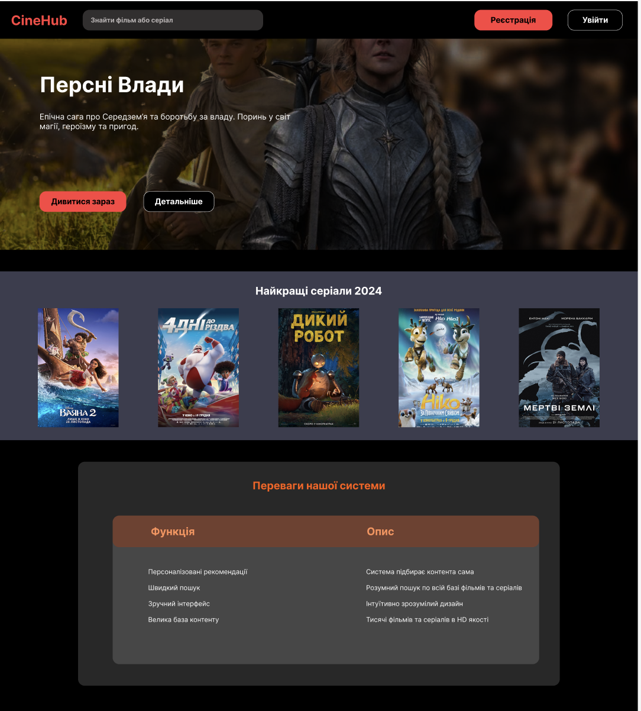
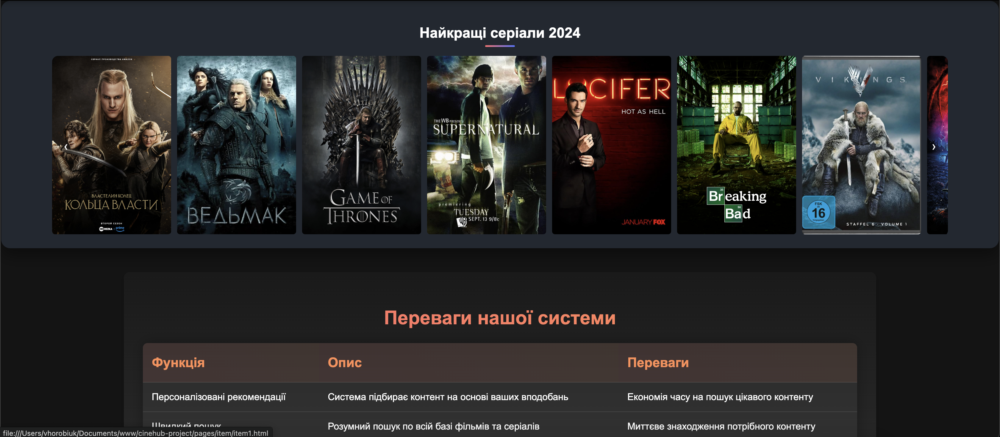
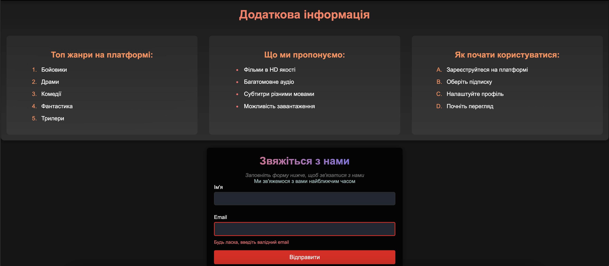
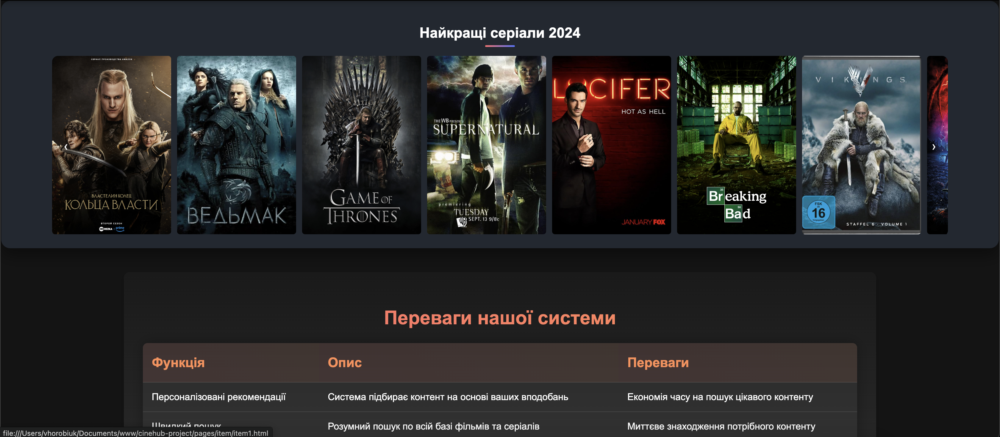
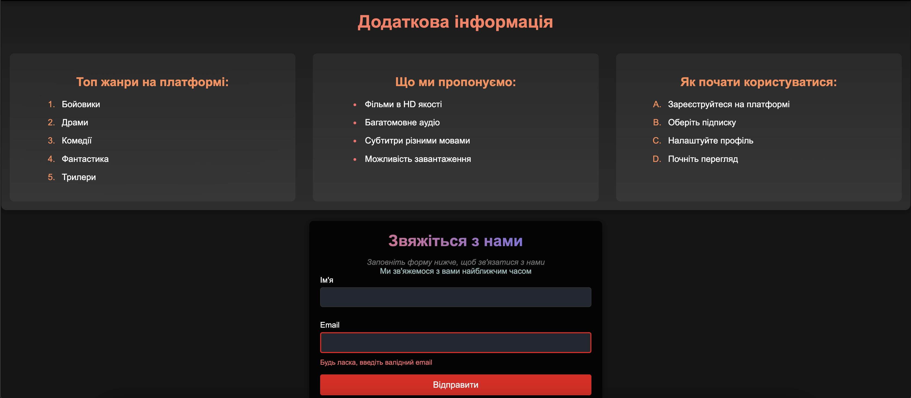
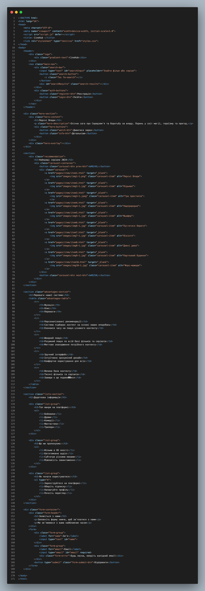
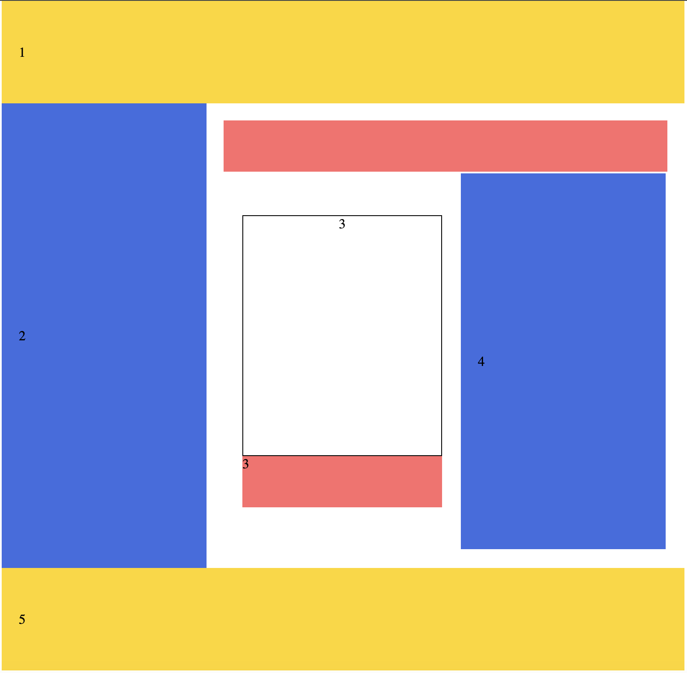
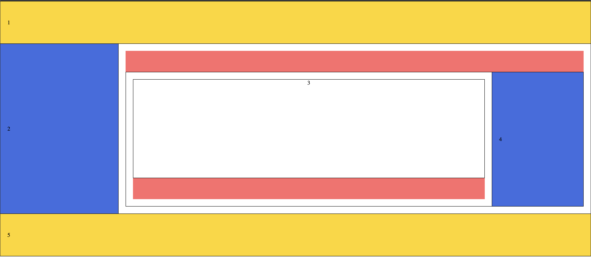
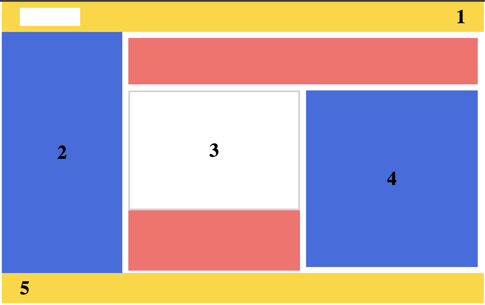
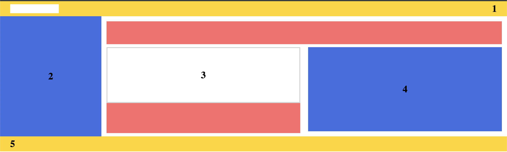

Інформація про лабораторну роботу
Тема:
ВЕРСТКА HTML-ДОКУМЕНТУ. БЛОКОВА ВЕРСТКА. ВЕРСТКА ЗАСОБАМИ CSS та FLEXBOX.
Мета:
- придбати практичні навички роботи верстки сторінок засобами CSS, верстки на основі плаваючих елементів, з'ясувати переваги та недоліки типів макетів веб-сторінок
- придбати практичні навички роботи верстки сторінок засобами CSS та FLEXBOX
Розташування:
- WEB-застосунок:
https://cinehub.static.domains - Звітний документ:
https://cinehub-report.static.domains
Завдання №1
Макет головної сторінки
Скріншот головної сторінки
 



Код головної сторінки
Завдання №2
Фіксована таблична верстка
Гумова таблична верстка
Фіксована блокова верстка
Гумова блокова верстка
Завдання №3 - Flexbox верстка
ПОПУЛЯРНІ НАПРЯМКИ
КУРСІВ ПРОГРАМУВАННЯ
JAVASCRIPT
Комплексний курс
Стартовий рівень: початківець
Тривалість: 5-11 місяців
Ціна: від 14500 грн.
Залишилось 3 місця
Детальніше
JAVA
Комплексний курс
Стартовий рівень: початківець
Тривалість: 6-11 місяців
Ціна: від 14500 грн.
Залишилось 6 місць
Детальніше
PYTHON
Комплексний курс
Стартовий рівень: початківець
Тривалість: 6-11 місяців
Ціна: від 14500 грн.
Залишилось 4 місця
ДетальнішеВІД НОВАЧКА ДО PRO-РОЗРОБНИКА
Робота в IT - це високі зарплати, можливість віддаленої співпраці із закордонними компаніями і свобода вибору. Але є і мінуси. Низький старт - головний з них. Фахівцю без досвіду складно отримати робочий стаж, а зарплата коливається на рівні мінімальної.
На курсах з інкубатором наші студенти отримують додаткових 5 місяців досвіду який так сильно вимагають роботодавці.
З таким резюме ви станете бажаним кандидатом для будь-якої компанії.
Контрольні питання:
1. На яких трьох базових концепціях засновані всі методики верстки сторінок засобами CSS?
Три базові концепції верстки CSS:
- Позиціонування (position) - визначає спосіб розміщення елементів
- Поток документа (flow) - природній порядок відображення елементів
- Блокова модель (box model) - визначає як розраховуються розміри елементів
2. Дати визначення фіксованому типу макетів веб-сторінок. Переваги та недоліки
Фіксований макет - має строго задані розміри в пікселях, які не змінюються при зміні розміру вікна браузера.
Переваги:
- Точний контроль над розташуванням елементів
- Однаковий вигляд на всіх пристроях
- Простота реалізації
Недоліки:
- Не адаптується під різні розміри екранів
- Можлива поява горизонтальної прокрутки
- Неефективне використання простору екрану
3. Дати визначення гумовому типу макетів веб-сторінок. Переваги та недоліки
Гумовий макет - використовує відносні одиниці виміру (%, em) і адаптується під ширину вікна браузера.
Переваги:
- Адаптивність під різні розміри екранів
- Ефективне використання простору
- Відсутність горизонтальної прокрутки
Недоліки:
- Складніша реалізація
- Можливі проблеми з читабельністю на дуже широких екранах
- Менш передбачуваний результат
4. Дати визначення еластичному типу макетів веб-сторінок. Переваги та недоліки
Еластичний макет - використовує одиниці em для масштабування відносно розміру шрифту.
Переваги:
- Масштабується пропорційно розміру шрифту
- Хороша доступність для користувачів
- Зберігає пропорції дизайну
Недоліки:
- Складні розрахунки розмірів
- Можливі проблеми з масштабуванням зображень
- Потребує ретельного тестування
5. Дати визначення адаптивному типу макетів веб-сторінок. Переваги та недоліки
Адаптивний макет - використовує медіа-запити для зміни макету залежно від розміру екрану.
Переваги:
- Оптимальне відображення на різних пристроях
- Можливість створення унікальних макетів для різних розмірів екрану
- хороший користувацький досвід
Недоліки:
- Більше часу на розробку
- Складніша підтримка коду
- Необхідність створення декількох версій макету
6. Дати визначення комбінованому типу макетів веб-сторінок. Переваги та недоліки
Комбінований макет - поєднує різні підходи до верстки в одному макеті.
Переваги:
- Гнучкість у виборі підходів
- Можливість використовувати найкращі аспекти різних типів макетів
- Оптимальне рішення для складних проектів
Недоліки:
- Підвищена складність розробки
- Можливі конфлікти між різними підходами
- Складніша підтримка коду
7. Як засобами HTML та CSS створити окремо веб-сторінку, використовуючи розмітку за допомогою таблиці?
Основні кроки створення табличної верстки:
- Використання тегів table, tr, td для створення структури
- Застосування атрибутів colspan і rowspan для об'єднання комірок
- Використання CSS для стилізації таблиці (border, padding, width тощо)
- Визначення фіксованої або відносної ширини стовпців
8. Як засобами HTML та CSS створити окремо веб-сторінку, використовуючи розмітку за допомогою плаваючих блоків?
Основні кроки створення блочно верстки:
- Використання div елементів для створення структури
- Застосування властивості float для позиціонування блоків
- Використання clear для контролю обтікання
- Встановлення margin та padding для створення відступів
- Використання width та height для контролю розмірів
Висновки
В ході виконання лабораторної роботи №3 було досягнуто наступних результатів:
- Освоєно різні типи макетів веб-сторінок: фіксований, гумовий, еластичний, адаптивний та комбінований
- Набуто практичних навичок створення веб-сторінок з використанням табличної верстки
- Опановано техніки верстки за допомогою плаваючих блоків
- Вивчено основні концепції Flexbox та їх застосування для створення гнучких і динамічних макетів
- Проаналізовано переваги та недоліки різних підходів до верстки
- Отримано практичний досвід у створенні різних типів макетів та їх порівнянні
Переваги та недоліки табличної верстки:
Переваги:
- Простота реалізації та розуміння структури
- Легке вирівнювання елементів по вертикалі
- Передбачувана поведінка в старих браузерах
Недоліки:
- Повільне завантаження (браузер чекає завантаження всієї таблиці)
- Складність внесення змін у структуру
- Надмірний HTML-код
- Погана адаптивність під мобільні пристрої
Переваги та недоліки верстки плаваючими блоками:
Переваги:
- Гнучкість та легкість модифікації макету
- Семантична структура документа
- Краща продуктивність завантаження
- Можливість створення адаптивного дизайну
Недоліки:
- Складність вертикального вирівнювання
- Можливі проблеми з відображенням при float-верстці
- Необхідність використання clearfix для коректного відображення
- Потребує глибшого розуміння CSS
Отримані знання та навички є важливими для розуміння сучасних підходів до верстки веб-сторінок та створення адаптивних веб-інтерфейсів.